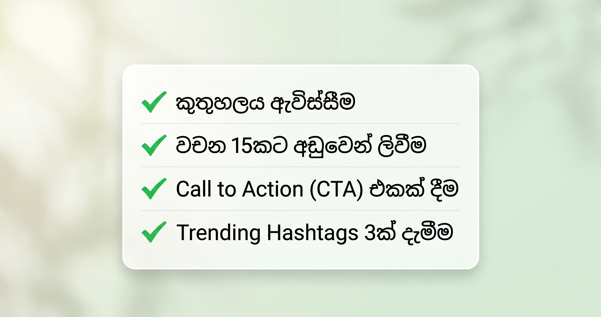

TikTok එකේ වීඩියෝ එකක් Viral යන්න නම්, වීඩියෝ එක කොච්චර ලස්සන වුණත් මදි, ඒකට හරියටම ගැළපෙන Caption එකක් තියෙන්නම ඕනේ. ගොඩක් අය කරන්නේ වීඩියෝ එක අප්ලෝඩ් කරලා නිකම්ම Hashtag ටිකක් දාලා අතෑරලා දාන එකයි. ඒත් ඇල්ගොරිතම් (Algorithm) එක ඔයාගේ වීඩියෝ එක තව අයට පෙන්නන්න නම්, මිනිස්සු ඒ වීඩියෝ එකේ රැඳිලා ඉන්න කාලය (Watch Time) සහ Engagement එක ගොඩක් වැදගත්. ඒකට ලොකුම සපෝට් එකක් දෙන්නේ ඔයා දාන කැප්ෂන් එකයි.
TikTok Captions ලියද්දි සැලකිලිමත් වෙන්න ඕන රහස් 4ක්:
1. කුතුහලය ඇවිස්සීම (Create Curiosity):
මිනිස්සුන්ට වීඩියෝ එකේ අන්තිම වෙනකන් බලන්න හේතුවක් දෙන්න. "වීඩියෝ එකේ අන්තිමට වෙන දේ බලන්නකෝ", "මේක නම් ඔයාලා හිතපු දෙයක් නෙවෙයි" වගේ දේවල් දැම්මම මිනිස්සු වීඩියෝ එක අන්තිම වෙනකන් බලනවා.
2. කෙටි සහ පැහැදිලි වීම:
TikTok බලන අය ගොඩක් දිග රචනා කියවන්න කම්මැලියි. ඒ නිසා ඔයාගේ අදහස වචන 10කින් 15කින් ලස්සනට, ටක් ගාලා තේරෙන විදියට ලියන්න.
3. Call to Action (CTA) එකක් දෙන්න:
මිනිස්සුන්ට මොනවා හරි කරන්න කියන්න. "ඔයාලගේ අදහසත් කමෙන්ට් කරගෙන යන්න", "මේක දකින්න ඕන යාළුවෙකුව මෙන්ෂන් කරන්න" වගේ දේවල් වලින් Comments සහ Shares ප්රමාණය වැඩි වෙනවා.
4. ගැළපෙන Hashtags පාවිච්චි කිරීම:
අදාළ නැති හැම Hashtag එකක්ම දාන්නේ නැතුව, වීඩියෝ එකට හරියටම ගැළපෙන Trending Hashtags 3ක් හෝ 4ක් පාවිච්චි කරන්න (උදා: #srilanka #sinhalatiktok #foryoupage).
Viral යන TikTok Captions සඳහා උදාහරණ 5ක්:
- ආතල් වීඩියෝ එකකට: "අන්තිමට වුණ දේ නම් මංවත් හිතුවේ නෑ! 😂 ඔයාලටත් මෙහෙම වෙලා තියෙනවද?"
- ප්රයෝජනවත් (Educational) වීඩියෝ එකකට: "මේ ට්රික් එක නම් ගොඩක් අයට වැදගත් වෙයි. Save කරලා තියාගන්න 💡"
- Travel වීඩියෝ එකකට: "ලංකාවේ තියෙන ලස්සනම තැන්වලින් එකක්. ඊළඟ නිවාඩුවට යන්න කට්ටියව මෙන්ෂන් කරමු! 🍃"
- කෑම වීඩියෝ එකකට: "මේක දැක්කම කටට කෙළ ඉනුවා නම් අනිවා ලයික් එකක් දාන්න 🤤"
- Business ප්රමෝෂන් එකකට: "අඩුම ගාණට හොඳම කොලිටි එකක් හොයනවා නම් මේක මිස් කරගන්න එපා. විස්තර ඕන අය කමෙන්ට් කරන්න 👇"

නිතර අහන ප්රශ්න (FAQs):
- සිංහලෙන් කැප්ෂන් දැම්මම Views අඩු වෙනවද? - කිසිසේත්ම නෑ. TikTok ලංකාවේ Audience එකට ගොඩක් වෙලාවට Push කරන්නේ සිංහල කන්ටෙන්ට්. ඒ නිසා සිංහලෙන් පැහැදිලිව දාන කැප්ෂන් වලට හොඳ Reach එකක් එනවා.
- Hashtags කීයක් දාන්න ඕනෙද? - 3ත් 5ත් අතර ප්රමාණයක් තමයි වඩාත්ම සුදුසු.
මේ ඔක්කොම හිත හිත ඉන්න කම්මැලියි වගේ නම්, අපේ SinhalaCaption ටූල් එකට ඇවිත් ඔයාගේ අදහස Singlish වලින් ගහන්න. තත්පරෙන් අපි ඔයාට Viral යන TikTok caption එකක් හදලා දෙන්නම්!
දැන්ම Caption එකක් හදන්න ✨